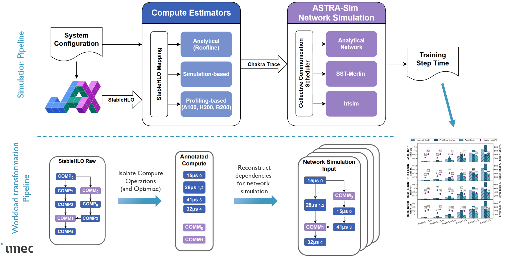

Architecture
{kind=link}

Hespas architecture
Hespas operates as a three-stage pipeline: workload export, compute estimation, and network simulation.
Stage 1: Workload Export
Hespas takes a distributed StableHLO workload as input. This is typically exported from JAX with sharding annotations and collective communication operators preserved. MaxText is the primary library used for exporting workloads. Workloads can also be constructed directly in StableHLO for targeted microbenchmarks.
Stage 2: Splitting and Compute Estimation
The StableHLO program is split into compute and communication regions, and each compute region is passed to an estimator backend for latency prediction.
Splitting separates compute operators (matmuls, convolutions, elementwise ops) from communication operators (all-reduce, all-gather). Two splitting strategies are available:
individual_split— produces fine-grained regions at operator level. Better for analytical estimators.linear_split— groups consecutive compute ops between collectives into larger regions. Better for profiling-based estimators.
Estimation maps each compute region to one of the supported backends:
Roofline — analytical model using peak FLOPS and memory bandwidth. No hardware required.
XLA — compiles and profiles on GPU via XLA’s HLO runner. Highest accuracy.
IREE — compiles and benchmarks on CPU or GPU via the IREE runtime.
Optional XLA compiler passes can be applied to the workload before roofline estimation. User defined estimators may require custom compiler flow or StableHLO mapping.
See Estimators for standalone estimator usage and Configuration for configuration details.
See Command Line Tools for the full CLI reference and output format.
Stage 3: Network Simulation
The latency-annotated workload is converted to Chakra
execution traces — one per simulated device. Compute regions become COMP nodes,
communication operators become COMM nodes with sizes inferred from tensor types.
These traces are consumed by ASTRA-sim to simulate distributed communication behavior. Hespas supports both ASTRA-sim’s analytical network backend and its SST-based backend for detailed network modeling.